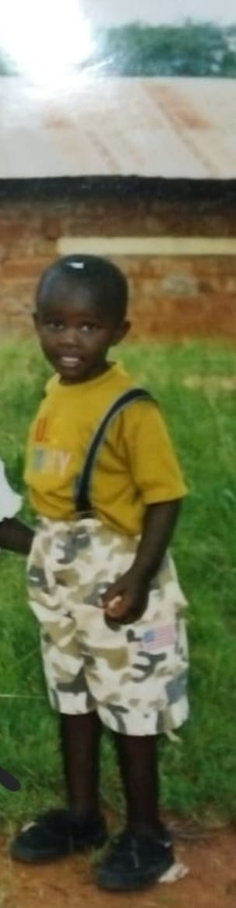

Growing Up in Kenya
I was born and raised in mbooni, makueni county, where my childhood was filled with joy, exploration, and laughter. I spent most of my early days playing games with family and friends, helping my family with chores, and learning life values from my grandparents.
One of my fondest memories is when all the family celebrates together during the festive seasons, sharing stories, food, and laughter. When our family meets it's always a time of joy and bonding. These moments taught me the importance of family, community, and cherishing the simple things in life.
